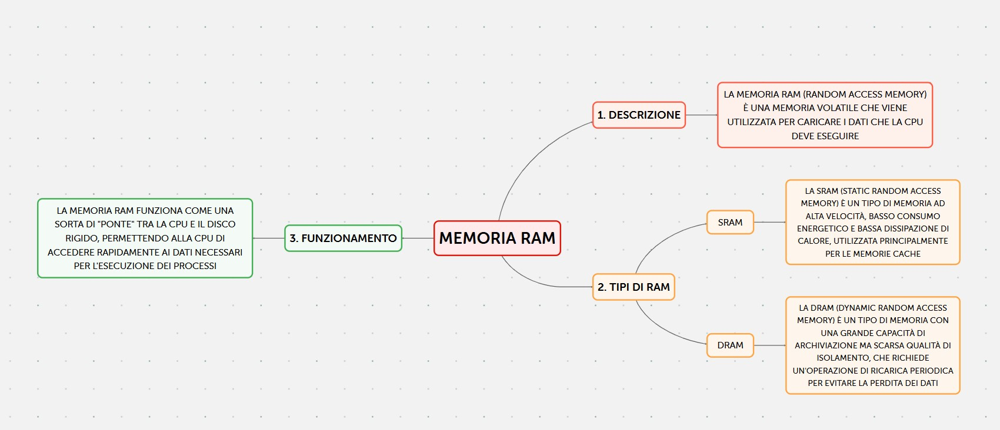
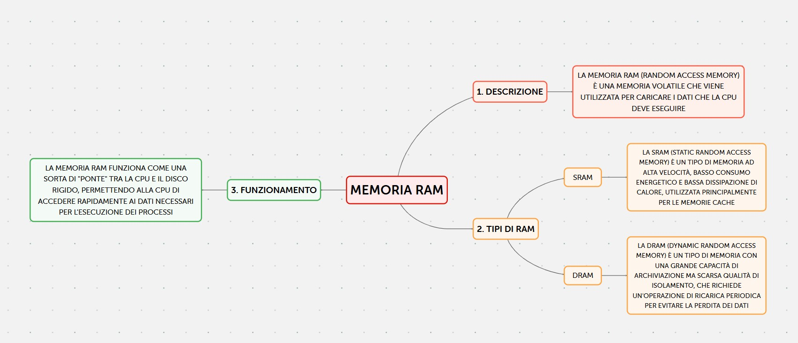
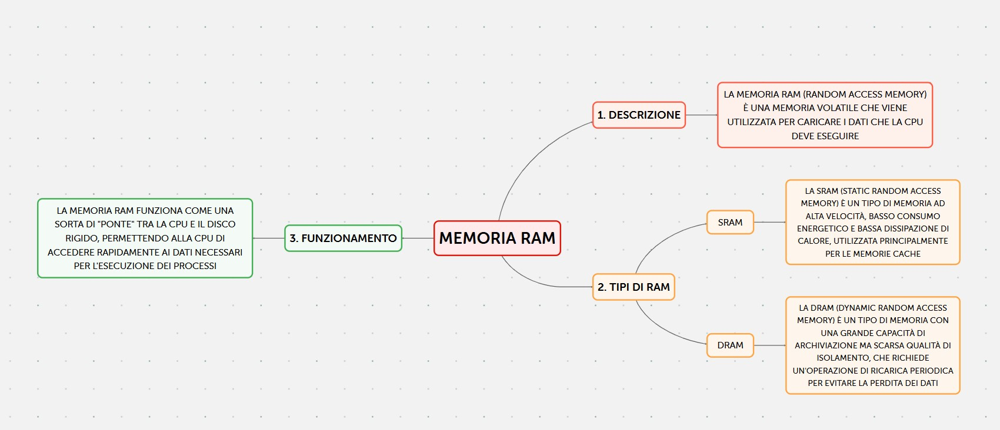

La memoria ram (Random access memory) è una memoria di tipo
volatile, ciò sta a significare che perde tutte le informazioni
date quando non viene alimentata, sulla Ram vengono caricati i
dati che la CPU deve eseguire.
Esistono vari tipi di RAM:
